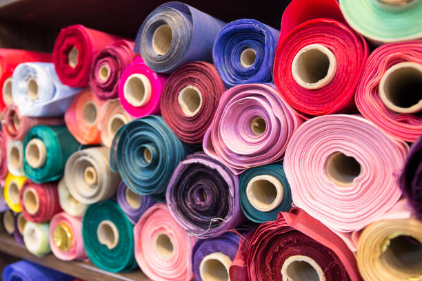

Оптовий постачальник тканин
«Palmira Textile»
Про нас
Компанія «Palmira Textile» здійснює постачання різних видів тканин від провідних виробників Європи та Азії на текстильний ринок України з 1992 року. Прямі контакти з виробниками та постачальниками дозволяють задовольнити будь-які потреби клієнтів та запропонувати найвигідніші ціни.
Відмінна якість тканин виробництва Китаю та Туреччини дозволить Вашій продукції та виробам з нашої тканини відповідати усім запитам клієнтів. Весь товар відповідає світовим стандартам якості.
Ми пропонуємо гнучкий підхід до інтересів наших клієнтів, вигідні пропозиції для торгових організацій, ательє, дизайнерських бюро та студій з інтер'єру, виробників різноманітного одягу чоловічого та жіночого асортименту, а також сучасність та відповідність модним тенденціям на рівні зі стильною класикою.

Mи працюємо:
- З великими оптовими покупцями з оформленням всієї необхідної документації
- З дрібним оптом по передоплаті на розрахунковий рахунок
- З фізичними особами по передоплаті на розрахунковий рахунок
- Для оптових покупців діє гнучка система знижок, також ми маємо для вас багато акційних пропозацій за дуже привабливою ціною
Як зробити замовлення
З розвитком інтернет-технологій та транспортних компаній купівля будь-якого товару стала швидкою та легкою з будь-якої точки в Україні чи світі. Ми пропонуємо нашим клієнтам швидко та зручно обрати і замовити тканину на нашому сайті. Для цього вам потрібно:
- Переглянути асортимент тканин у розділі «Каталог». Ви можете виконати зручний пошук за типом тканини чи за її призначенням. Всі тканини, доступні для замовлення на сайті,наявні на складі, тож ваше замовлення буде швидко оброблене.
- Замовлення можна зробити також на сторінках наших соцмереж або телефоном.
- Додати потрібний метраж обраної тканини у кошик. Оформити замовлення в кошику і оплатити його. Тут можна ознайомитися з правилами оплати та доставки.
- Якщо у вас виникли питання, ви можете звернутися до наших менеджерів. Вони люб'язно допоможуть з усіма питаннями, а за потреби можуть відправити вам зразки тканин безкоштовно.